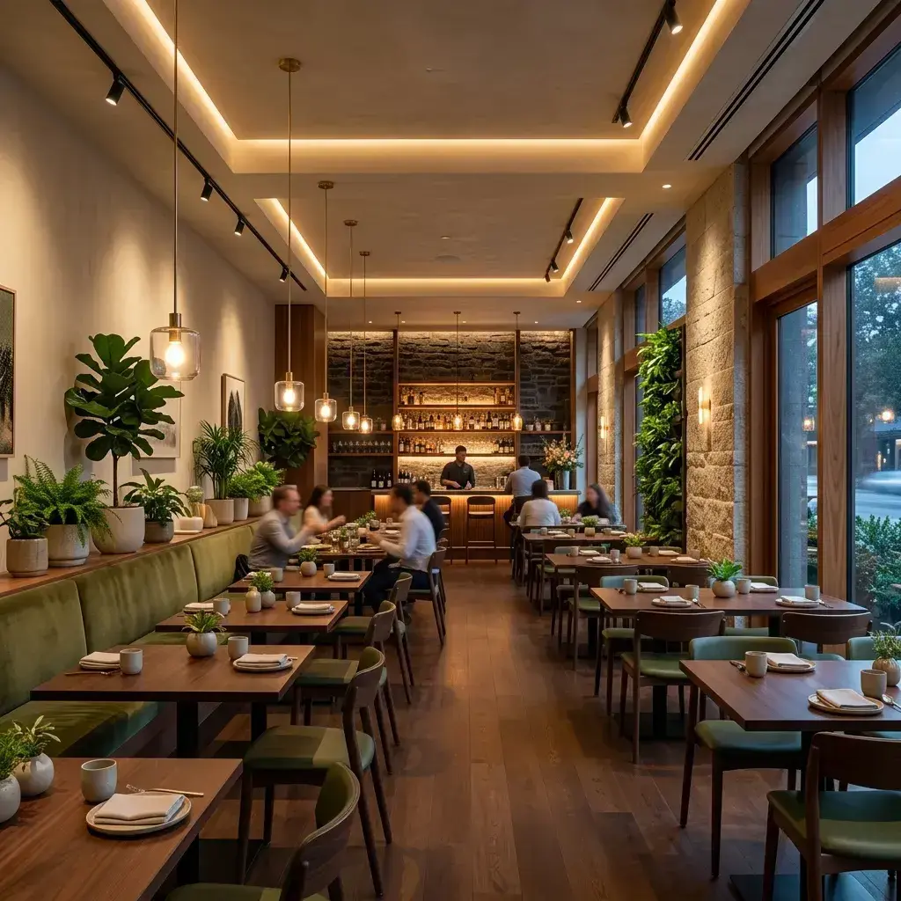

Our Journey
A narrative built layer by layer.
Stackly began with a simple belief: that eating should be an act of grounding. Our name represents how we stack textures, balances, and values together to design unforgettable culinary moments.
"True gastronomy isn't about complexity; it is about respecting the integrity of the ingredients and stacking them with intent."
Conscious Kitchen
Zero waste goal, organic compost operations, and biodegradable packaging.
Woodfired Craft
Dishes prepared using slow woodfired cooking to locking in raw smoky flavors.